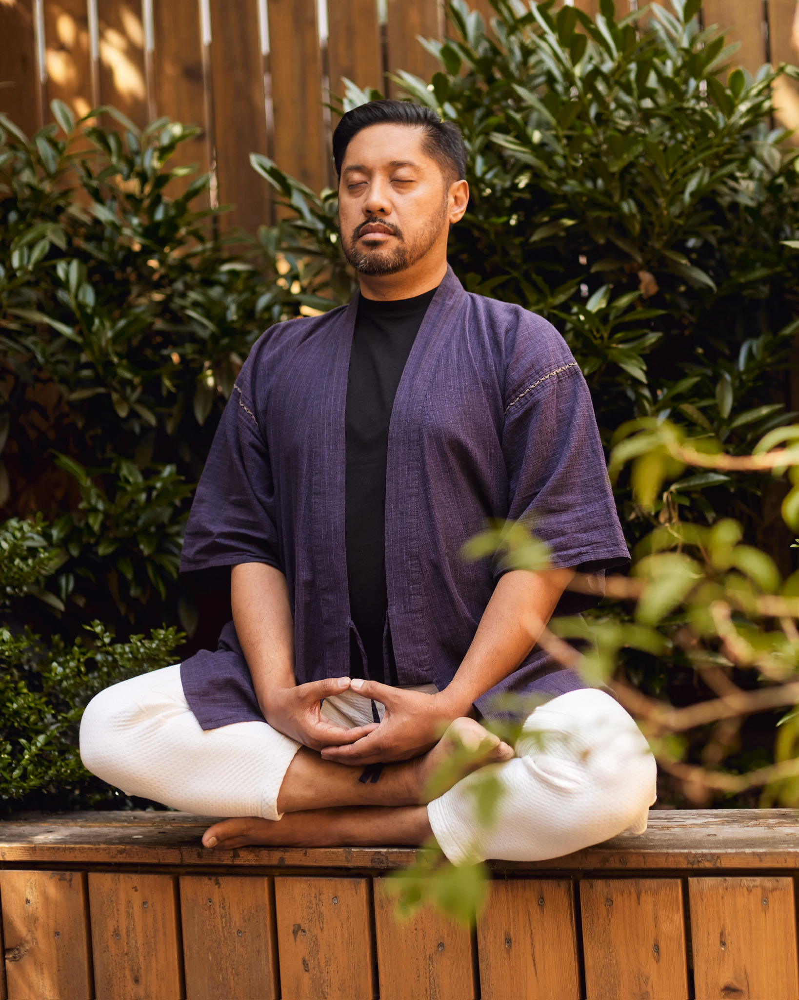

The go-to-market foundation for certified coaches who are prepared, capable, and still waiting for the next step to appear.
You finished your certification proud and prepared. Then you looked up. The next step was not there.
You do not have a
motivation problem.
You have a system problem.
The certification prepared you to coach. It did not give you a go-to-market system. No framework for positioning. No structure for packaging. No clear path from outreach to paying clients. That system was never included. It was assumed. It was supposed to come later. For most coaches, later never arrives.

Adrian did not build this from the outside. He completed the coaching certification and workshop instructor program because he needed the framework and the community. He knows this world from the inside.
Over twenty years at the intersection of technology, human performance, and behavioral systems taught him one thing: the gap between knowing and doing is not a knowledge problem. It is a system problem. Signal Dojo is that system, built because he needed it himself.
This page was built start to finish using Signal Dojo Core. Strategy, positioning, offer, copy, design... In just 5 days.
Not a course. Not a template. A go-to-market operating system built on product thinking: ship, measure, learn, decide. Applied to the one product most coaches never build systematically: themselves.
Who you are, who you serve, and what makes your positioning distinct. Not a branding exercise. A strategic foundation built from what you already know and have lived.
→ Feeds into Customer AvatarYour audience in their own language. Pain, desire, objections. Built from real signal, not assumptions about who you think you serve.
→ Feeds into OfferWhat you are selling, how it is structured, what transformation it delivers, and how to price it with confidence. The document you have been avoiding building.
→ Feeds into Landing PageThe page that converts a stranger into a buyer. Built directly from the three outputs above. Not a template. A page that reflects your actual positioning.
→ Your foundation is completeDelivered through Skool. Workspace is a portable Google Doc, downloadable and yours to keep. Self-directed. Work at your own pace.
"I came into this with a landing page that needed real work and no clear brand strategy behind it. Adrian walked me through the entire process. And when I say walked me through it, I mean a deep, deep dive into how to essentially create my business from scratch. By the end I had a complete foundation I could actually build on, a professional visual identity, and a landing page generated directly from the work we did. For the first time, I had a system, not just ideas."Octavio Lorenzo Certified Heroic Coach and Workshop Instructor, PMP, CSM
30-day guarantee. If Core is not worth it, you get your money back. Full stop.
That is the starting point for most people. The Personal Brand Strategy prompt surfaces your positioning from what you already know and have lived. You do not need answers before you begin. The system creates them.
Core collects what you already have and uses it as input. You do not start over. What comes out is a validated foundation built from your existing work, not in spite of it.
Signal Dojo Lab and Studio exist for that. Lab adds weekly group calls and a practitioner community. Studio adds weekly 1:1 access to Adrian directly. Core is the foundation both are built on. Start here.
Every week without a system is a week of compounding friction. Core is self-directed. You set the pace.
30-day no-questions-asked guarantee. If Core is not worth it, you get a full refund. The risk is on Signal Dojo.